Ce projet m'a permis d'améliorer beaucoup de mes compétences :
- Organiser la structure des données pour le déploiement du code source
- Analyser les enjeux et les attentes des futurs joueurs
- Comprendre des documentations techniques complexes sur une console ou un logiciel
- Optimiser la gestion de la mémoire et du moindre élément graphique (modèle 3D, textures)

En chiffre, Sonic Unleashed 3DS c'est :
- 225 000 vues sur youtube
- + de 5000 téléchargement
- 6700 abonnés sur youtube